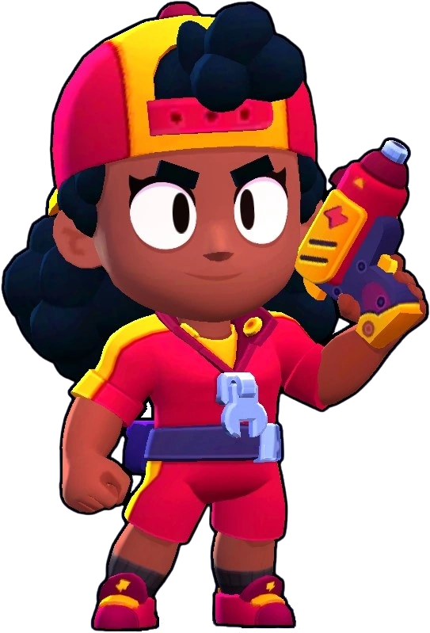

Brawlers
Shelly
Class: Common Damage Dealer
Description: Shelly is a balanced brawler with a wide-range shotgun attack. She excels at close-to-medium range combat, with her spread attack hitting multiple targets.
Super Ability: Shelly’s super unleashes a powerful blast that can break walls and push enemies back.
Gadgets:
Fast Forward: Shelly dashes forward a short distance.
Clay Pigeons: Shelly’s next main attack has a narrower spread and longer range.
Star Powers:
Shell Shock: Shelly’s Super slows down enemies for 2.5 seconds.
Band-Aid: When Shelly falls below 40% health, she instantly heals for 2220 health. Band-Aid recharges in 15 seconds.

Rare Brawlers
Nita
Class: Rare Damage Dealer
Description: Nita is a versatile fighter who summons a bear to assist her in combat. She attacks with shockwaves that can hit multiple enemies in a straight line.
Super Ability: Nita’s super summons a bear that chases enemies and deals melee damage, making her a powerful force in close-quarters combat.
Gadgets:
Bear Paws: Nita’s bear stuns enemies for 1 second.
Faux Fur: Nita’s bear gains a shield that reduces damage by 35% for 3 seconds.
Star Powers:
Bear With Me: When Nita or her Bear deal damage, Nita and her Bear both heal for 1040 health.
Hyper Bear: Nita’s Bear attacks much faster, decreasing time between attacks by 60%.

Colt
Class: Rare Damage Dealer
Description: Colt fires a barrage of long-range bullets, dealing significant damage over time if he can land multiple hits. He has great range but needs to be precise with his shots.
Super Ability: Colt’s super fires a rapid stream of bullets that pierces through walls and enemies, making him a formidable damage dealer.
Gadgets:
Speedloader: Colt instantly reloads 2 ammo.
Silver Bullet: Colt’s next attack is a powerful shot that deals 2000 damage and pierces through walls.
Star Powers:
Slick Boots: Colt’s movement speed is increased by 13%.
Magnum Special: Colt’s attack range is increased by 11% and his bullets travel 11% faster.

Bull
Class: Rare Tank
Description: Bull is a tough, close-range brawler with high health and a powerful shotgun. He excels at tanking damage and charging into fights, where he can deal massive damage up close.
Super Ability: Bull’s super allows him to charge forward, breaking walls and damaging enemies in his path.
Gadgets:
T-Bone Injector: Bull instantly heals for 1500 health.
Stomper: Bull can stop his Super charge, stunning nearby enemies for 1.5 seconds.
Star Powers:
Berserker: When Bull falls below 60% health, his reload speed is increased by 35%.
Tough Guy: Bull gains a shield that reduces damage by 30% when he falls below 40% health.

El Primo
Class: Rare Tank
Description: El Primo is a tanky melee brawler with high health and strong punches. He thrives in close combat, where his attacks deal considerable damage.
Super Ability: El Primo leaps into the air and slams down, dealing damage and knocking enemies away.
Gadgets:
Suplex Supplement: El Primo grabs the closest enemy and throws them behind him.
Asteroid Belt: El Primo calls down a small meteor to strike a targeted area, dealing 2000 damage.
Star Powers:
El Fuego: El Primo’s Super leaves a trail of fire, dealing 1200 damage over 4 seconds to enemies.
Meteor Rush: El Primo gains a 32% speed boost for 5 seconds after using his Super.

Poco
Class: Rare Support
Description: Poco is a support brawler who attacks with soundwaves from his guitar. His attacks have a wide range and can hit multiple enemies.
Super Ability: Poco’s super heals himself and nearby allies, making him an excellent support character in team fights.
Gadgets:
Tuning Fork: Poco heals himself and nearby allies for 1000 health over 5 seconds.
Protective Tunes: Removes all negative status effects from nearby teammates (stun, slow, poison).
Star Powers:
Da Capo!: Poco’s main attack heals teammates for 700 health.
Screeching Solo: Poco’s Super now deals 1250 damage to enemies.

Super Rare Brawlers
8-Bit
Class: Super Rare Damage Dealer
Description: 8-Bit is a slow-moving brawler with a high-damage laser attack. He has high health and great range, making him a solid damage dealer, but his slow speed can be a drawback.
Super Ability: 8-Bit places a damage-boosting turret that increases the damage output of nearby allies.
Gadgets:
Cheat Cartridge: 8-Bit instantly teleports to his turret.
Extra Credits: 8-Bit’s next attack shoots twice as many projectiles.
Star Powers:
Boosted Booster: 8-Bit’s damage-boosting turret now has a 50% larger radius.
Plugged In: 8-Bit moves significantly faster while near his turret.

Rico
Class: Super Rare Damage Dealer
Description: Rico fires bouncy bullets that ricochet off walls and hit enemies in tricky angles. His ability to hit opponents around corners makes him a unique and challenging brawler to play.
Super Ability: Rico’s super unleashes a flurry of bouncing bullets that can cover a wide area and damage multiple enemies.
Gadgets:
Multi Ball Launcher: Rico fires two waves of bouncy bullets in all directions.
Bouncy Castle: Rico heals for 300 health per bullet that bounces off a wall.
Star Powers:
Super Bouncy: Rico’s bullets deal 100 extra damage after bouncing.
Robo Retreat: Rico gains a speed boost when below 40% health.

Darryl
Class: Super Rare Tank
Description: Darryl is a tanky, shotgun-wielding brawler who excels in close-range combat. His high health makes him a great initiator for fights.
Super Ability: Darryl’s super is a rolling attack that allows him to quickly close the distance between him and his enemies, damaging anyone in his path.
Gadgets:
Recoiling Rotator: Darryl spins, firing his shotguns in all directions.
Tar Barrel: Darryl drops a slowing field that reduces enemy movement speed by 35% for 5 seconds.
Star Powers:
Steel Hoops: Darryl gains a shield that reduces damage by 90% for 0.9 seconds after using his Super.
Rolling Reload: Darryl’s reload speed is doubled for 5 seconds after using his Super.

Dynamike
Class: Super Rare Damage Dealer
Description: Dynamike is a long-range brawler who throws dynamite sticks that explode after a short delay, dealing area damage. He excels at controlling large spaces with his explosive attacks.
Super Ability: Dynamike’s super is a massive barrel of TNT that deals heavy damage in a large area, capable of destroying walls and enemy cover.
Gadgets:
Fidget Spinner: Dynamike spins, throwing dynamite in all directions.
Satchel Charge: Dynamike’s next main attack stuns enemies for 1.5 seconds.
Star Powers:
Dyna Jump: Dynamike can jump over his own bombs.
Demolition: Dynamike’s Super deals 1000 extra damage.

Jessie
Class: Super Rare Brawler
Description: Jessie is a versatile brawler who uses an energy orb that bounces between enemies. Her attacks can deal damage to multiple targets if positioned correctly.
Super Ability: Jessie’s super summons a turret that shoots at enemies, providing additional firepower and support.
Gadgets:
Spark Plug: Jessie’s turret emits a shockwave, slowing down nearby enemies.
Recoil Spring: Jessie’s turret’s attack speed is doubled for 5 seconds.
Star Powers:
Energize: Jessie’s shots that hit her turret heal it for 800 health.
Shocky: Jessie’s turret’s shots bounce between enemies.

Epic Brawlers
Bo
Class: Epic Brawler
Description: Bo is a ranged attacker with explosive arrows. He has medium health and high attack potential. His arrows explode on impact, covering a wide area and damaging multiple enemies.
Super Ability: Bo lays down hidden mines that explode when enemies step on them, making him great for area control.
Gadgets:
Super Totem: Bo drops a totem that slowly charges the Super of all nearby allies.
Tripwire: Bo can manually detonate his mines, reducing their explosion delay.
Star Powers:
Circling Eagle: Bo can see enemies hiding in bushes from much further away.
Snare a Bear: Bo’s mines stun enemies for 2 seconds when triggered.

Edgar
Class: Epic Brawler
Description: Edgar is a fast, close-range brawler with a lifesteal mechanic. His punches allow him to recover some health with each hit.
Super Ability: Edgar’s super lets him jump over obstacles and enemies, allowing him to close the gap and engage enemies quickly.
Gadgets:
Let’s Fly: Edgar’s Super charges 525% faster for 4 seconds.
Hardcore: Edgar gains a shield that absorbs 2000 damage for 2 seconds.
Star Powers:
Hard Landing: Edgar deals 1000 damage to nearby enemies when he lands after using his Super.
Fisticuffs: Edgar heals 25% more from his attacks.
Griff
Class: Epic Brawler
Description: Griff is a long-ranged brawler who attacks by throwing 3 waves of coins, each wave having 3 coins.
Super Ability: Griff throws out banknotes in a wide area that do more damage the farther away the opponent is, but the banknotes return to him, damaging opponents in the area again.
Gadgets:
Piggy Bank: Griff drops a piggy bank that explodes after a short delay, dealing damage to nearby enemies and destroying walls.
Coin Shower: Griff’s next attack shoots 33% more coins.
Star Powers:
Keep the Change: Griff’s coins from his main attack now pierce through enemies.
Business Resilience: Griff gains a shield that reduces damage by 30% when he falls below 40% health.
Mythic Brawlers
Tara
Class: Mythic Brawler
Description: Tara throws cards that spread out in a cone, dealing damage to all enemies they hit. She can hit multiple targets at once, making her great for dealing with groups.
Super Ability: Tara’s super pulls enemies toward the center of a black hole, grouping them together and blowing up.
Gadgets:
Psychic Enhancer: Tara and her allies can see all enemies, even in bushes, for 5 seconds.
Support From Beyond: Tara spawns three shadow clones that attack enemies for a short duration.
Star Powers:
Black Portal: When Tara’s Super ends, it spawns a shadow clone of herself.
Healing Shade: Tara’s shadow heals herself and nearby allies for 400 health per second.

Byron
Class: Mythic Support
Description: Byron is a support brawler with low health, and low damage but stacking poison that does 760 damage over time.
Super Ability: Byron’s super heals all his allies by 2100 over time while dealing the same amount of damage to all enemies in the range.
Gadgets:
Shot in the Arm: Byron instantly heals himself for 800 health.
Booster Shots: Byron’s next attack shoots three projectiles instead of one.
Star Powers:
Injection: Byron shoots a dart every 3.5 seconds that can pass through enemies and walls.
Malaise: Byron’s Super reduces all healing to affected enemies by 50%.
Fang
Class: Mythic Brawler
Description: Fang is a melee brawler who deals heavy damage up close and can kick his shoe for a long-range attack. His melee punches are fast and deal significant damage.
Super Ability: Fang’s super lets him dash toward enemies and hit them with a flying kick, damaging all enemies in his path.
Gadgets:
Corn-Fu: Fang throws popcorn in all directions, dealing damage to nearby enemies.
Roundhouse Kick: Fang stuns nearby enemies for 0.5 seconds with a roundhouse kick.
Star Powers:
Fresh Kicks: Fang’s super is refreshed instantly if it hits an enemy brawler.
Divine Soles: Fang’s main attack now deals 500 more damage if his shoe hits an enemy.

Mortis
Class: Mythic Brawler
Description: Mortis is a melee brawler with a fast dash attack that allows him to quickly close the distance on enemies. He excels at hit-and-run tactics, dashing in to deal damage and then escaping.
Super Ability: Mortis’ super summons a swarm of bats that damage enemies and heal Mortis for the damage dealt.
Gadgets:
Combo Spinner: Mortis spins in a circle, dealing 1300 damage to nearby enemies.
Survival Shovel: Mortis gains a faster reload speed for 4 seconds.
Star Powers:
Creepy Harvest: Mortis heals 1800 health when he defeats an enemy brawler.
Coiled Snake: Mortis can dash much farther after charging up his attack for 3.5 seconds.

Mr. P
Class: Mythic Brawler
Description: Mr. P is a ranged brawler who throws suitcases that bounce and deal damage over obstacles. He can control the battlefield with his turret that spawns robotic porters to attack enemies.
Super Ability: Mr. P’s super spawns a robo-porter that creates small robot helpers to harass enemies.
Gadgets:
Service Bell: Mr. P’s next robo-porter spawns with increased damage and health for 12 seconds.
Porter Reinforcements: Mr. P instantly spawns three robo-porters at his home base.
Star Powers:
Handle With Care: Every 4 seconds, the explosion damage of Mr. P’s next attack is increased by 40%.
Revolving Door: All robo-porters from the home base now have 20% more health and 30% higher damage.

Legendary Brawlers
Spike
Class: Legendary Brawler
Description: Spike is a long-range brawler who throws a cactus that explodes on impact, releasing spikes in all directions. He excels at controlling the battlefield and dealing damage from afar.
Super Ability: Spike’s super creates a field of slowing, damaging cacti that hinder enemy movement and deal continuous damage.
Gadgets:
Popping Pincushion: Spike shoots three waves of needles in all directions.
Life Plant: Spike creates a cactus that shields him and his teammates, absorbing 3500 damage before exploding and healing nearby allies for 1000 health.
Star Powers:
Fertilize: Spike recovers 800 health per second while standing in the area of his Super.
Curveball: Spike’s main attack projectiles curve, making it harder for enemies to avoid them.

Crow
Class: Legendary Brawler
Description: Crow is a toxic assassin who throws poisoned daggers that deal damage over time. His fast movement and damage-over-time ability make him dangerous in hit-and-run tactics.
Super Ability: Crow’s super allows him to leap into the air, throwing a spread of poisoned daggers in all directions upon landing.
Gadgets:
Defense Booster: Crow gains a shield that reduces incoming damage by 60% for 3 seconds.
Slowing Toxin: Crow’s next attack slows enemies for 5 seconds.
Star Powers:
Extra Toxic: Crow’s poison reduces the damage enemies deal by 25%.
Carrion Crow: Crow deals more damage to enemies with 50% or less health.

Leon
Class: Legendary Brawler
Description: Leon is a stealthy brawler who throws shurikens with a wide spread. His Super allows him to turn invisible, making him a deadly assassin that can sneak up on enemies.
Gadgets:
Clone Projector: Leon spawns a holographic clone that travels in a straight line to confuse enemies.
Lollipop Drop: Leon drops a lollipop that creates an invisible field for him and his allies.
Star Powers:
Smoke Trails: Leon gains a 30% speed boost for the duration of his Super.
Invisiheal: Leon heals 1000 health per second while invisible.

Amber
Class: Legendary Brawler
Description: Amber is a fire-based brawler who continuously sprays fire from her torch, dealing damage to all enemies in her path. She can leave a trail of oil on the ground, which she can ignite to deal even more damage.
Super Ability: Amber’s super throws a large flask of oil that spreads over a wide area. She can ignite the oil at any time, creating a massive fire zone.
Gadgets:
Fire Starters: Amber’s movement speed increases by 20% for 3 seconds, and she leaves a trail of fire behind her.
Dancing Flames: Amber shoots small fireballs around herself, damaging nearby enemies.
Star Powers:
Wild Flames: Amber can have two oil pools on the ground at once.
Scorchin’ Siphon: Amber recharges her super 50% faster when standing in a puddle of oil.
Meg
Class: Legendary Brawler
Description: Meg is a brawler who can transform into a mech with increased health and damage output.
Super Ability: Meg’s super transforms her into a powerful mech with a medium ranged attack, but if she is already in her mech, her super makes her swing her mech’s arm doing a lot of damage.
Gadgets:
Jolting Volts: Meg heals her mech for 1500 health over 5 seconds.
Toolbox: Meg’s next attack in her normal form deals 50% more damage.
Star Powers:
Force Field: Meg gains a shield that reduces damage taken by 35% for 10 seconds when her mech is destroyed.
Self Destruction: When Meg’s mech is destroyed, it explodes and deals 1000 damage to nearby enemies.

Draco
Class: Legendary Brawler
Description: Draco is a powerful brawler who can transform into a dragon, gaining increased damage and area control.
Super Ability: Draco’s super transforms him into a dragon, where his attacks deal more damage and he gains more health.
Star Powers:
Expose: Every 5 seconds, the next attack exposes enemies on hit. Exposed enemies take 35% increased damage for 5 seconds.
Shredding: When Draco uses his Super, he recovers 2750 health.